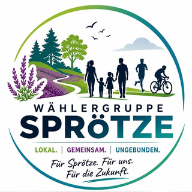

🏡
Ortschaft Sprötze
38,1 Tsd. € Erträge und 27,3 Tsd. € Aufwendungen.
Ordentliches Ergebnis: +10,8 Tsd. €

Sprötze aktuell
Lokale Zahlen, Projekte und Haushaltsbezug für den Ortsteil Sprötze.
Im Mittelpunkt stehen das Ortschaftsbudget, die GS Sprötze und die Haushaltspositionen mit direktem Bezug zum Ortsteil.
38,1 Tsd. € Erträge und 27,3 Tsd. € Aufwendungen.
Ordentliches Ergebnis: +10,8 Tsd. €
3,0 Mio. € als Verpflichtungsermächtigung für ein Projekt mit Ortsbezug.
Damit wird Sprötze im Investitionsausblick der Stadt sichtbar.
+2,4245 Mio. € Verbesserung im Zahlungsmittelbestand insgesamt.
Das schafft etwas mehr Luft gegenüber dem bisherigen Ansatz.
Schwerpunkte
Die Ortschaft Sprötze steht mit 38,1 Tsd. € Erträgen und 27,3 Tsd. € Aufwendungen im Plan. Daraus ergibt sich ein ordentliches Ergebnis von +10,8 Tsd. €.
Für die Grundschule Sprötze ist eine Verpflichtungsermächtigung von 3,0 Mio. € vorgesehen. Damit gehört das Projekt zu den sichtbarsten Maßnahmen mit Ortsbezug.
Beobachtung
Quellen im Kontext
Die lokalen Aussagen sind nicht ausgelagert, sondern direkt an den Inhalt dieser Seite gekoppelt.
Direkte Haushaltsstellen
0007 mit 38,1 Tsd. € Erträgen und 27,3 Tsd. € Aufwendungen211070.787100 über 3,0 Mio. €Nachweise
Grundlage ist der beschlossene 1. Nachtragshaushaltsplan 2026 der Stadt Buchholz in der Nordheide.